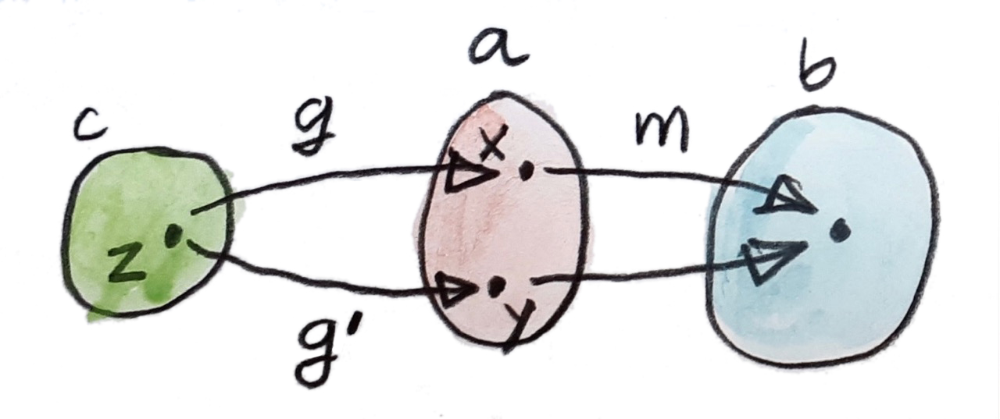
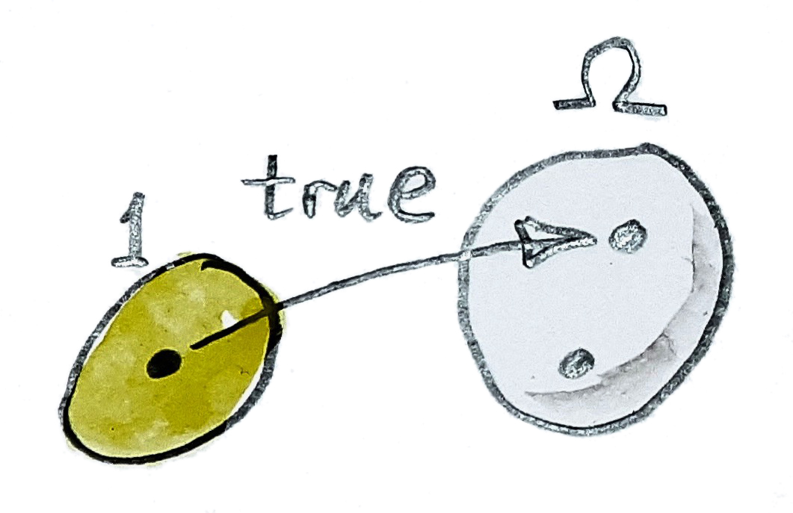
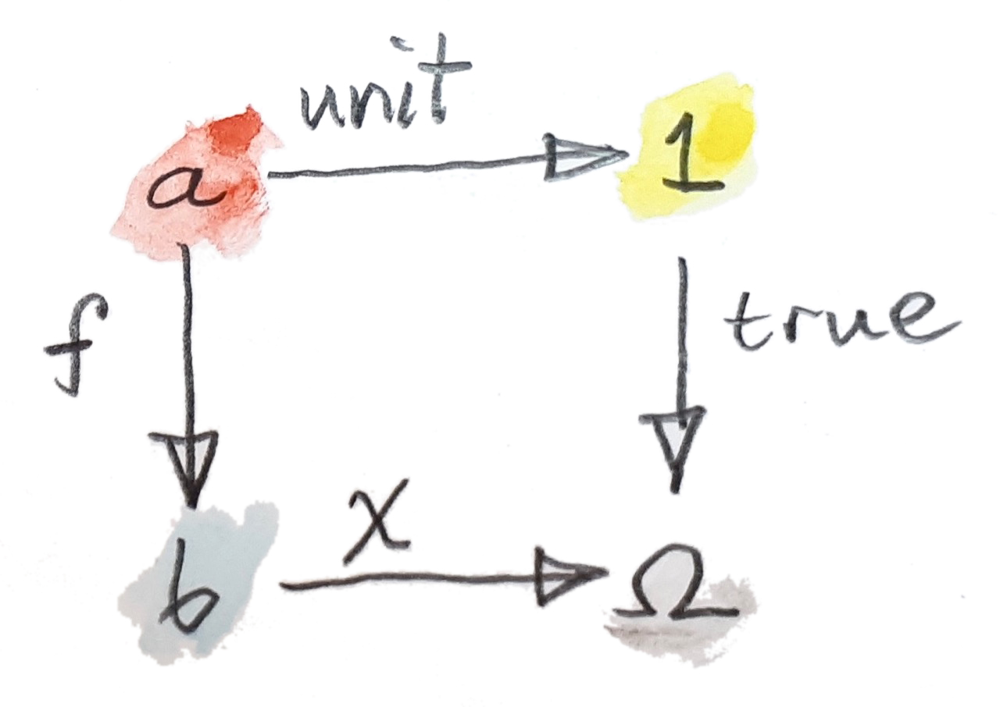

30 Topoid (Sketch)
ผมตระหนักว่าเราอาจจะออกนอกจากการเขียนโปรแกรมและลงเข้าไปในคณิตศาสตร์ที่ซับซ้อน แต่คุณไม่รู้มาก่อนว่าอะไรคือการปฎิวัติขนานใหญ่ต่อไปในการเขียนโปรแกรมที่อาจจะนำเข้ามาและประเภทของคณิตศาสตร์ที่อาจจะจำเป็นในการเข้าใจมัน ได้มีแนวคิดที่ต่างๆที่น่าสนใจอยู่รอบๆอย่างการเขียนโปรแกรมแบบreactiveที่เป็นfunctionalกับเวลาต่อเนื่องของมัน(continuous time) ส่วนเสริมของระบบtypeของHaskellกับtypeที่ไม่เป็นอิสระ(dependent types) หรือการสำรวจทฤษฎีtypeแบบhomotopyในการเขียนโปรแกรม
ถึงตอนนี้ผมได้ระบุtypesกับsetsของค่าต่างๆอย่างลวกๆ นั้นไม่ถูกต้องจริงๆ เพราะว่าแนวทางเหล่านี้ไม่ได้คำนึงถึงทำความจริงที่ว่า ในการเขียนโปรแกรมเราคำนวณค่าต่างๆ และการคำนวณนั้นคือกระบวนการที่นำเวลาและในกรณีที่สุดโต่งก็อาจจะไม่จบ การคำนวณที่ผันแปรคือส่วนหนึ่งของภาษาที่Turing-complete
ได้มีเหตุผลพื้นฐานว่าทำไมทฤษฎีsetอาจจะไม่เป็นเหมาะสมในฐานะพื้นฐานสำหรับวิทยาศาสตร์คอมพิวเตอร์หรือแม้กระทั้งคณิตศาสตร์มันเอง การเปรียบเทียบทีดีคือการที่ว่าทฤษฎีเป็นภาษาassemblyที่ผูกอยู่กับบางarchitecture ถ้าคุณต้องการที่จะดำเนินการใช้คณิตศาสตร์ของคุณบนarchitecture ที่แตกต่างกัน คุณต้องใช้เครื่องมือที่ทั่วไปมากกว่านี้
หนึ่งความเป็นไปได้คือการใช้พื้นที่แทนที่setต่างๆ พื้นที่มาคู่กับโครงสร้างที่มากกว่าและอาจจะนิยามโดยที่ไม่ต้องกลับไปยังset หนึ่งอย่างที่มาคู่กับพื้นที่คือtopology ที่มีความจำเป็นในการนิยามสิ่งต่างๆอย่างความต่อเนื่อง และแนวทางแบบทั่วไปของtopologyคือ(คุณสามารถเดาได้)ผ่านทฤษฎีset โดยเฉพาะเช่นในแนวคิดของsubseที่เป็นศูนย์กลางของtopology ไม่แปลกใจที่นักทฤษฎีcategory ได้generalizeของของแนวคิดนี้ไปยังนอกเหนือจาก\(\textbf{Set}\) typeของcategoryที่มีคุณสมบัติที่ตรงในการใช้งานมันในฐานะสิ่งที่มาแทนสำหรับทฤษฎีsetถูกเรียกว่าtopos(ในแบบpluralคือtopoi) และมันจัดเตรียม(ข้างในสิ่งหลายๆอย่าง)คือแนวคิดที่ถูกวางนัยของsetย่อย
30.1 ตัวจำแนกวัตถุย่อย(Subobject Classifier)
เรามาเริ่มโดยการลองที่จะแสดงถึงแนวคิดของsetย่อยโดยการใช้functionsแทนที่จะเป็นสมาชิดต่างๆ function\(f\)ใดๆก็ตามจากบางset\(a\)ไปยัง\(b\)นิยามsetย่อยของ\(b\)ที่คือimageของ\(a\)ภายใต้\(f\) แต่ก็ได้มีหลายfunctionsที่นิยามsetย่อยเดียวกัน เราต้องเฉพาะเจาะจงมากว่านี้ ในการเริ่ม เราอาจจะเพ่งเล็งไปยังfunctionsที่injective(ตัวที่ไม่รวบสมาชิกต่างๆไปยังตัวเดียว) functionแบบinjective”ยัด(inject)“setหนึ่งำปยังอีกตัวหนึ่ง สำหรับsetที่มีจำกัด คุณอาจจะจินตนาการfunctionแบบinjectiveในฐานะลูกศรที่ขนานกันที่ต่อสมาชิกของsetหนึ่งกับสมาชิกของอีกตัวหนึ่ง แน่นอนว่าsetตัวแรกไม่สามารถใหญ่กว่าsetตัวที่สองหรือไม่นั้นลูกศรอาจจะต้องรวมกันตรงจุดสุดท้าย ได้มีความไม่แน่นอนที่ยังเหลืออยู่นั้นคือได้อาจจะมีอีกset\(a'\)และอีกfunctionแบบinjective\(f'\)จากsetนั้นไปยัง\(b\)ที่เลือกsetย่อยเดียวกัน แต่คุณอาจจะทำให้คุณเองมั่นใจว่าsetดังต่อไปนี้ต้องisomorphicกับ\(a\) เราสามารถใช้ความจริงนี้ในการนิยามsetย่อยในฐานะชุดของfunctionแบบinjectiveที่มีความสัมพันธ์โดยisomorphismsของdomainพวกมัน หรือให้ชัดเจนกว่านี้ เราบอกว่าfunctionแบบinjectiveสองตัวอย่าง
\[ \begin{align*} f & :: a \to b \\ f' & :: a' \to b \end{align*} \]
นั้นเท่าเทียมกับถ้าได้มีisomorphism
\[ h :: a \to a' \]
ในการที่ว่า
\[ f = f'\ .\ h \]
ชุดของinjectionsที่เท่าเทียมกับแบบนี้นิยามsetย่อยของ\(b\)อย่าง

นิยามนี้สามารถถูกยกไปยังcategoryใดๆก็ตามถ้าเราแทนที่functionแบบinjectiveด้วยmonomorphism แค่เตือนความจำคุณ monomorphism\(m\)จาก\(a\)ไปยัง\(b\)นั้นถูกนิยามโดยคุณสมบัติสากล สำหรับวัตถุ\(c\)ใดๆก็ตามและคู่ใดๆก็ตามของmorphisms
\[ \begin{align*} g & :: c \to a \\ g' & :: c \to a \end{align*} \]
ในการที่ว่า
\[ m\ .\ g = m\ .\ g' \]
มันต้องเป็นว่า\(g=g'\)นั้นก็คือ

บนset นิยามนี้นั้นง่ายกว่าในการทำความเข้าใจถ้าเราพิจารณาว่ามันหมายความว่าอะไรสำหรับfunction\(m\)ที่ไม่ได้เป็นmonomorphism มันอาจจะโยงสองสมาชิกที่แตกต่างกันของ\(a\)ไปยังสมาชิกหนึ่งของ\(b\) เราอาจจะหาสองfunction\(g\)และ\(g'\)ที่แตกต่างกันแค่ที่สองสมาชิกเหล่านี้ หลังการประกอบกันกับ\(m\)อาจจะปิดบังความแตกต่าง

ได้มีอีกวิธีทางหนึ่งของการนิยามsetย่อยคือในการใช้functionหนึ่งที่ถูกเรียกว่าfunction characteristic มันคือfunction\(\chi\)จากset\(b\)ไปยังsetที่มีสองสมาชิก\(\Omega\) สมาชิกหนึ่งของsetนี้ถูกระบุในฐานะ”จริง”ของสมาชิกเหล่านี้ของ\(b\)ได้มีสมาชิกของsetย่อย และ”ไม่จริง”สำหหระบสิ่งที่ไม่อยู่
มันยังเหลือในกการหาว่าการระบุของสมาชิกว่า”จริง”นั้นหมายความว่าอะไร เราสามารถใช้เคล็ดลับทั่วๆไปคือการใช้functionจากsetที่สมาชิกเดียวไปยัง\(\Omega\)เราจะเรียกfunctionนี้ว่าจริง
\[ \operatorname{true} :: 1 \to \Omega \]

นิยามเหล่านี้สามารถถูกรวมกันในแบบที่ว่าพวกมันไม่ได้แค่นิยามว่าsubobjectคืออะไรแต่ก็นิยามวัตถุพิเศษ\(\Omega\)โดยที่ไม่ต้องพูดถึงสมาชิก แนวคิดคือว่าเราต้องการให้morphis m\(\operatorname{true}\)ในการแสดงแทนของsubobject”ทั่วไป” ใน\(\textbf{Set}\)มันเลือกsetย่อยที่มีสมาชิกเดียวจากsetที่มีสองสมาชิก\(\Omega\) สิ่งนี้นั้นทั่วไปทำที่จะเป็นได้ มันนั้นคือsetย่อยแท้อย่างแน่นอน เพราะว่า\(\Omega\)นั้นมีสมาชิกมากกว่าหนึ่งที่ไม่ได้อยู่ในsetย่อยนั้น
ในสภาพแบบทั่วไป เรานิยามจริงให้เป็นmonomorphismจากวัตถุสุดท้ายไปยังวัตถุจำแนก\(\Omega\) แต่เราต้องการในการนิยามวัตถุจำแนก เราต้องการคุณสมบัติสากลที่เชื่อมวัตถุนี้ไปยังfunctionลักษณะเฉพาะ มันกลับมาเป็นว่าใน\(\textbf{Set}\) pullbackของจริงตามfunctionลักษณะเฉพาะ\(\chi\)ที่นิยามทั้งวัตถุย่อย\(a\)และfunctionแบบinjectiveที่ผังมันใน\(b\) ในที่นี้คือdiagramของการpullback

เรามาวิเคราะห์diagramนี้ equationของการpullbackคือ
\[ \operatorname{true}\ .\ \operatorname{unit} = \chi\ .\ f \]
function \(\operatorname{true}\ .\ \operatorname{unit}\)โยงทุกๆสมาชิกของ\(a\)ไปยัง”จริง” ดังนั้น\(f\)ต้องโยงสมาชิกทั้งหมดของ\(a\)ไปยังสมาชิกเหล่านี้ของ\(b\)ที่\(\chi\)นั้น”จริง” สิ่งเหล่านี้โดยนิยามคือสมาชิกของsetย่อยที่ถูกระบุโดยfunctionลักษณะเฉพาะ\(\chi\) ดังนั้นimageของ\(f\)คือsetย่อยนั้นอย่างแน่นอน ความเป็นสากลของpullbackรับประกันว่า\(f\)นั้นinjective
diagramของการpullbackนี้สามารถถูกใช้ในการนิยามวัตถุจำแนกในcategoryนอกเหนือจาก\(\textbf{Set}\) categoryแย่างนี้ต้องมีวัตถุสุดท้าย ที่จะให้เรานิยามmonomorphism\(\operatorname{true}\) มันก็ต้องมีpullbacks ที่เงื่อนไขจริงๆคือมันต้องมีlimitจำกัด(finite limits)(ที่pullbackคือตังอย่างของlimitจำกัด) ภายใต้สมมติฐานเหล่านี้ เรานิยามวัตถุจำแนก\(\Omega\)โดยคุณสมบัติที่ว่าสำหรับทุกๆmonomorphism\(f\)ได้มีmorphism\(\chi\)ที่เป็นเอกลักษณ์ที่ทำให้diagramของpullbackสมบูรณ์
เรามาวิเคราะห์ประโยคสุดท้าย ในตอนที่เราสร้างpullback เราได้สามวัตถุมา\(\Omega\),\(b\)และ\(1\)และสองmorphisms\(\operatorname{true}\)และ\(\chi\) การมีอยู่ของpullbackหมายความว่าเราสามารถหาวัตถุ\(a\)ที่ดีที่สุด คู่กับสองmorphisms\(f\)และ\(\operatorname{unit}\)(ตัวหลังนั้นถูกกำหนดอย่างเป็นเอกลักษณ์โดยนิยามของวัตถุสุดท้าย)ที่ทำให้diagramนั้นcommute
ในที่นี้ เรากำลังแก้ระบบของหลายสมการ เรากำลังแก้สำหรับ\(\Omega\)และ\(\operatorname{true}\)ในขณะที่กำลังเปลี่ยนทั้ง\(a\)และ\(b\) สำหรับ\(a\)และ\(b\)ที่ให้มา อาจะหรืออาจะไม่มีmonomorphism\(f::a\to b\) แต่ถ้ามันมีอยู่ เราต้องการให้มันเป็นpullbackของบาง\(\chi\) นอกจากนี้เราต้องการให้\(\chi\)นี้ให้ถูกกำหนดอย่าง เป็นเอกลักษณ์โดย\(f\)
เราไม่สามารถพูดได้ว่าได้มีความตรงกันแบบหนึ่งต่อหนึ่งระหว่างmonomorphisms\(f\)และfunctionลักษณะเฉพาะ\(\chi\) เพราะว่าpullbackนั้นเป็นเอกลักษณ์จนถึงisomorphism แต่ในนิยามก่อนหน้านี้ของsubsetในฐานะชุดของinjectionที่เท่ากัน เราสามารถวางนัยเท่าไปโดยการนิยามวัตถุย่อยของ\(b\)ในฐานะชุดของmonomorphismsที่เท่ากันไปยัง\(b\) ชุดของmonomorphismsนั้นตรงกันแบบหนึ่งต่อหนึ่งกับชุดของpullbacksที่เท่ากันของdiagramของเรา
เราจึงนิยามsetของsubobjectsของ\(b\)ว่า\(\operatorname{Sub}(b)\)ในฐานะชุดของmonomorphismsและสังเกตได้ว่ามันisomorphicกับsetของmorphismsจาก\(b\)ไปยัง\(\Omega\)
\[ \operatorname{Sub}(b)\cong\textbf{C}(b,\Omega) \]
สิ่งนี้กลับกลายเป็นisomorphismธรรมชาติของสองfunctors ในอีกความหมายหนึ่ง\(\operatorname{Sub}(-)\)นั้นมีfunctorตัวแทน(แบบcontravariant)ที่ตัวแทนของมันคือวัตถุ\(\Omega\)
30.2 Topos
toposคือcategoryที่
- Cartesianปิดคือ มันมีproductsทั้งหมด วัตถุสุดท้ายและexponentials(ที่ถูกนิยามในฐานะadjointsด้านขวาของproducts)
- มีlimitsสำหรับทุกdiagramsแบบจำกัด
- มีตัวจำแนกวัตถุย่อย
ชุดของคุณสมบัติเหล่านี้ทำให้toposเป็นตัวเลือกที่ดี(ในการแทนที่)\(\textbf{Set}\) ในการใช้งานหลากหลาย มันก็มีคุณสมบัติที่ตามาจากนิยามของมัน ตังอย่างเช่นtoposมีcolimitsแบบจำกัดทั้งหมดรวมไปถึงวัตถุเริ่มต้น
มันอาจจะน่าสนใจในการนิยามตัวจำแนกวัตถุย่อยในฐานะcoproduct(sum)ของสอง สำเนาของวัตถุสุดท้าย (นั้นคือแบบนี้ใน\(\textbf{Set}\)) แต่เราต้องการที่จะให้มีความทั่วไปมากกว่านั้น Topoiที่สิ่งนี้เป็นจริงถูกเรียกว่าBoolean
30.3 TopoiและLogic
ในทฤษฎีset functionลักษณะเฉพาะอาจจะถูกตีความในฐานะคุณสมบัติในการนิยามบางสมาชิกของset ที่ก็คือpredicate(ภาคแสดง)ที่ก็จริงสำหรับบางสมาชิกและไม่จริงสำหรับตัวอื่นๆ predicate\(\operatorname{isEven}\)เลือกsetย่อยของเลขคู่จากsetของจำนวนธรรมชาติ ในtopos เราสามารถgeneralizeของแนวคิกของpredicateในการเป็นmorphismจากวัตถุ\(a\)ไปยัง\(\Omega\) นี้คือเหตุผลว่าทำไม\(\Omega\)ในบางครั้งนั้นจริงถูกเรียกว่าวัตถุความจริง(truth object)
predicatesนั้นคือส่วนประกอบที่สร้างlogic toposนั้นเก็บเครื่องมือทั้งหมดที่จำเป็นในการศึกษาlogic มันมีproductที่ตรงกับconjunctionในแบบlogic(การและในlogic) coproductsสำหรัdisjunctionsบ(การหรือในแบบlogic)และexponentialsสำหรับimplications axiomsมาตรฐานทั้งหมดของlogicนั้นถูกต้องในtoposยกเว้นกฏแห่งความไม่มีท่ามกลาง(excluded middle)(หรือในความหมายเดียวกันคือ การกำจัดนิเสธสองครั้ง(double negation elimination)) นั้นคือเหตุผลว่าทำไมlogicของtoposนั้นตรงกับlogicแบบintuitionisticหรือconstructive
logicแบบintuitionisticหนั้นได้มีความนิยมมาขึ้น ได้พบกับการสนับสนุนที่คาดไม่ถึงจากวิทยาการคอมพิวเตอร์ แนวคิกแบบดังเดิมของความไม่มีท่ามกลางนั้นมีฐานมาจากความเชื่อที่ว่าได้มีความจริงสัมบูรณ์คือทุกๆประโยคนั้นถูกไม่ก็ผิด หรือถ้าในคนโรมโบราณอาจจะพูดtertium non datur(ไม่มีทางเลือกที่สาม)แต่วิธีเดียวที่เราสามารถรู้ว่าบางอย่างนั้นจริงหรือเท็จ นั้นคือถ้าเราสามารถพิสูจน์หรือหักล้างมัน การพิสูจน์คือขบวนการ การคำนวณและเรารู้ว่าการคำนวณใช้เวลาและทรัพยากร ในบางกรณีมันอาจจะไม่มีวันจบ มันไม่สมเหตุสมผลในการที่จะอ้างว่าประโยคนั้นถูกถ้าเราไม่สามารถพิสูจน์มันในเวลาที่มีจำนวนจำกัด toposนั้นที่มีวัตถุความจริงที่เหมาะสมกว่าให้กรอบสำหรับการปั้นรูปlogicที่น่าสนใจ
30.4 โจทย์ท้าทาย
- แสดงว่าfunction\(f\)นั้นคือpullbackของ\(\operatorname{true}\)กับการที่functionลักษณะเฉพาะต้องinjective